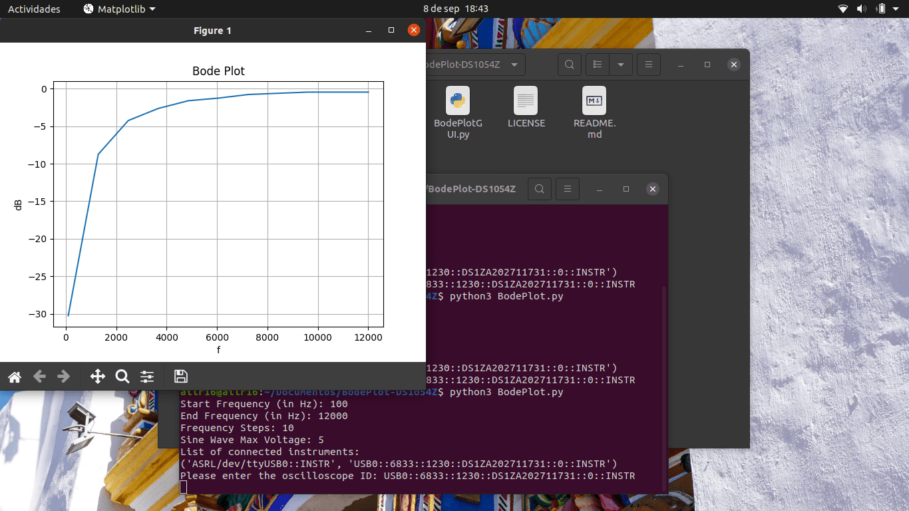
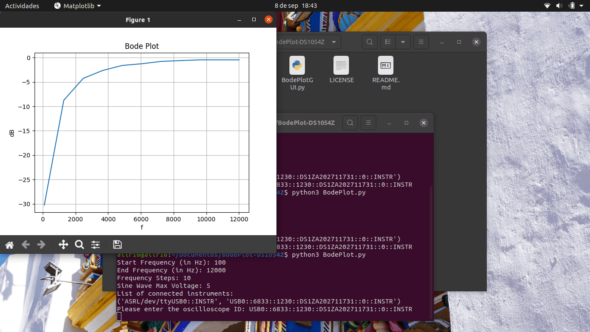
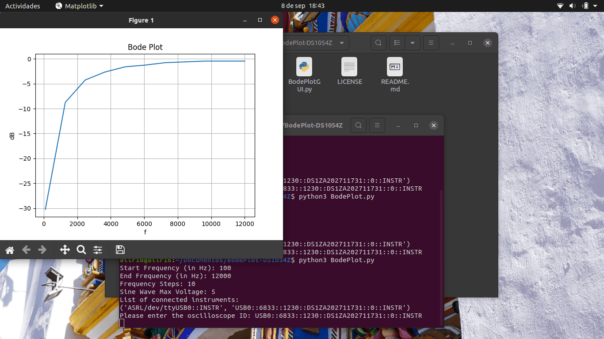

MEDIA
 

Bode Plotter
ABOUT THE PROJECT
This project uses a Rigol oscilloscope (DS1054Z)
and a FY3224s signal generator to run a frequency response
analysis and creating Bode plots. It's coded in Python and
tested under Ubuntu, but it must works in any Operating System.
MEDIA
